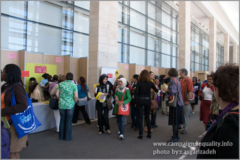
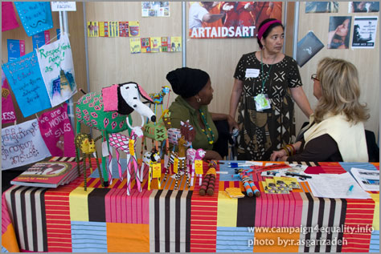
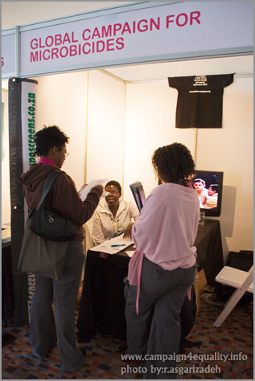
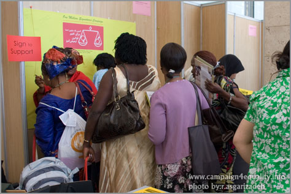
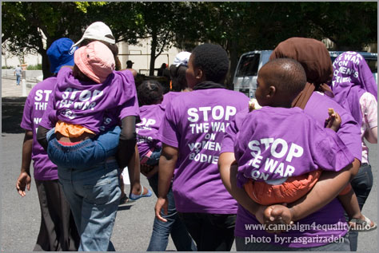

پذيرش > تریبون > گزارش كمپين > برای ارتباط گیری با یکدیگر باید اخلاق جمعی داشت
 آموخته های ما از کنفرانس AWID آموخته های ما از کنفرانس AWID

 برای ارتباط گیری با یکدیگر باید اخلاق جمعی داشت برای ارتباط گیری با یکدیگر باید اخلاق جمعی داشت
9 دی 1387 - تنظیم : هدی امینیان /عکس : رها عسگری زاده - نسخه قابل چاپ
AWID سازمانی بین المللی است که در زمینه توسعه و حقوق زنان کار می کند. این سازمان غیر دولتی عضو پذیر است و زنان و موسساتی از سراسر دنیا عضو آن هستند. هم چنین این سازمان هر سه سال یک کنفرانس مربوط به زنان برگزار می کند که بزرگترین کنفرانس زنان است و نزدیک به 2000 نفر از سراسر دنیا در آن شرکت می کنند، در کنفرانس امسال که در افریقای جنوبی برگزار شد تعدادی از اعضاء کمپین یک میلیون امضا نیز شرکت داشتند.
آزاده فرامرزیها و لیلا نظری به همراه سوسن طهماسبی که به دلیل ممنوع الخروجی نتوانست در این کنفرانس شرکت کند در گفتگویی با هدا امینیان به تشریح این کنفرانس و بیان تجربیات خود پرداخته اند.
لازم به ذکر است که سوسن طهماسبی برای سخنرانی در دو پانل با موضوعات استراتژیها و چالشهای جنبشهای زنان در ایران و به طور خاص در کمپین و پانل دیگری با موضوع بنیاد گرایی، سکولاریزم و دین دعوت شده بود. خانم شیرین عبادی در پانل اول به جای ایشان سخنرانی کردند.

کنفرانس امسال و موارد مطرح شده در آن چگونه بود؟
آزاده فرامرزیها: کنفرانس امسال در آفریقای جنوبی برگزار شد و نزدیک به 2000 نفر از اکثر کشورهای دنیا شرکت داشتند، تعداد زیادی از شرکت کنندگان از کشورهای آفریقایی و خاورمیانه آمده بودند. موضوعات مطرح شده در آن خیلی گسترده بود و نه تنها در حوزه برابری زنان بلکه در حوزه های متفاوتی مثل خشونت، قوانین، هنر، تکنولوژی، بهداشت و ایدز و ... بحث شد.
لیلا نظری: این کنفرانس در 4 روز برگزار شد و هر روز از 9 تا 11 صبح یک جلسه عمومی با حضور تمام شرکت کنندگان برگزار می شد و پس از آن تا عصر چندین پانل و یا کارگاه با موضوعات مختلف که شامل معرفی کتاب هم بود به صورت همزمان برگزار می شد و باید انتخاب می کردیم که در کدام شرکت کنیم. در واقع سرعت انتقال اطلاعات بسیار زیاد بود.
چگونه می توان برای شرکت در این کنفرانس اقدام کرد و هزینه های آن به چه صورت است؟
لیلا نظری: فرم ثبت نام را روی سایت می گذارند و تا زمان مشخصی می توان ثبت نام کرد. شرکت کنندگان به سه دسته تقسیم می شوند. شرکت کنندگان مستقل، اعضای ایوید و داوطلبان کار در حین کنفرانس. اعضای ایوید و افرادی که حاضرند در حین کنفرانس کار داوطلبانه انجام دهند برای ثبت نام شامل تخفیف می شوند. در هر صورت برای تامین هزینه ها می توان درخواست کمک مالی نمود.
هزینه برای ثبت نام و حضور در کنفرانس حدود 300 دلار است و بقیه هزینه های سفر که شامل هزینه هواپیما و هتل می شود. برای این منظور ایوید به روش های مختلفی پول به دست می آورد و می تواند به دیگران برای شرکت در کنفرانس کمک مالی کند. یکی از روش ها این بود که موقع ثبت نام از شما پرسیده می شد که ’می خواهی با پرداخت پول بیشتری خواهرت را نیز به این کنفرانس دعوت کنی!’ یعنی هر کس ثبت نام می کند می تواند پول اضافه ای را پرداخت کند و این پول برای افرادی که قادر به پرداخت هزینه نیستند مصرف شود و این یکی از ابتکارات جالب آن بود. یعنی امکان داشت که این هزینه را اشخاص بپردازند.
افرادی که پول آنها پرداخته می شود و از ایوید کمک مالی می گیرند باید شرایط خاصی داشته باشند؟
سوسن طهماسبی: آنها به کشورهایی که در رده بندی خودشان جزو کشورهای کم درآمد طبقه بندی می شوند کمک می کنند. همچنین افراد می توانند فرمی را پر کنند و در آن تقاضای کمک بکنند، اگر فرد مستحق دریافت آن کمک باشد آن وقت واجد شرایط کمک می شود و یا اگر عضو سازمانی است که در آمد کمی دارد و در کشورهای کم در آمد است. اگر کسی هم به عنوان سخنران دعوت شود هزینه او را هم ای وید تقبل می کند.
شما چگونه به این کنفرانس رفتید و هزینه اش چگونه تامین شد؟
آزاده فرامرزیها: ما هم ثبت نام کردیم و جزو اولویت قرار گرفتیم. ما در فرم از فعالیتمان در ایران و اینکه پولی نداریم که هزینه کنیم، نوشتیم و با توجه به فعالیتی که داشتیم برای کمک انتخاب شدیم. کنفرانس امسال در مورد جنبش ها بود و چون نوع فعالیت ما در ایران مربوط به موضوع کنفرانس می شد با در خواست ما به عنوان اعضای کمپین موافقت شد .
سوسن طهماسبی: من چون به عنوان سخنران از طرف ای وید دعوت شده بودم این سازمان قبول کرده بود که هزینه سفر من را پرداخت کند. در ابتدا شرکت ما در کنفرانس هماهنگ شده نبود و هر کس به صورت فردی اقدام کرده یا دعوت شده بود. بعد که متوجه شدیم که سه چهار نفر از اعضای کمپین به کنفرانس می روند، فکر کردیم فرصت خوبی است که کمپین را آنجا به صورت رسمی تر معرفی کنیم. بنابراین با ای وید تماس گرفتیم و خلاصه ای از فعالیتهایمان ارائه دادیم و برای گرفتن یک پانل تقاضا کردیم. بعضی از پنل های کنفرانس را خود ایوید می گذارد و بعضی دیگر را به پیشنهاد افراد، مثلا در مورد ایدز در آفریقا و ... گروهی در ایوید این تقاضاها را بررسی می کنند و در صورت موافقت به آنها زمان سخنرانی می دهند. ما بعد از اینکه همه این فرصت ها گذشته بود، متوجه شدیم که چند نفر از بچه های کمپین می روند و بنابراین از آنها خواهش کردیم که یک پانل یا کارگاه به ما برای معرفی کمپین بدهند و برای این قضیه مکاتبه کردیم. در ابتدا قرار شد به ما یک میز بدهند چون کنفرانس در مورد جنبش ها بود و جنبشهای مختلف می توانستند یک میز داشته باشند که آنجا به معرفی حرکت خود و ایجاد ارتباط با دیگر شرکت کنندگان بپردازند. اما به دلیل پافشاری ما یک پنل کوتاه در زمان نهار به کمپین دادند که زمانش کوتاهتر از پنل های اصلی است ولی در طول برنامه ریزیشان این پنل کوتاه تبدیل به یک پنل اصلی یک ساعت و نیمه شد. به این شکل به ما یک پنل دادند و ما قصد داشتیم در آن کمپین را معرفی کنیم.
در این پانل به چه ابعادی از کمپین پرداخته شد و شما به چه مواردی در مورد این حرکت اشاره کردید؟
آزاده فرامرزیها : پنل ما روز اول بود و نزدیک صد نفر از کشورهای مختلف به سالن آمدند، مخصوصا کشورهای خاورمیانه. در ابتدا خانم عبادی در مورد فعالیت های جنبش زنان در ایران و مشکلات و اولویت های این جنبش صحبت کردند و ما کمپین را به عنوان یک نمونه از جنبش زنان و فعالیت های آنان در ایران معرفی کردیم.
در مورد کمپین، اهداف و خواسته هایش توضیحاتی دادیم و در مورد شیوه های که فعالان برای پیشبرد اهداف به کار گرفته اند توضیحات مفصلتری دادیم. از روش چهره به چهره و اهداف آموزشی کمپین گرفته تا نحوه استفاده از تکنولوژی و اینترنت برای ایجاد ارتباط با مخاطب (که البته تنها رسانه جمعی در اختیار کمپین است) و همچنین توانمندی افراد در ایجاد ارتباط با مخاطب چه از طریق رابطه چهره به چهره و چه در استفاده از تکنولوژی صحبت کردیم. راجع به مسایل مالی کمپین حرف زدیم و اینکه کمپین از هیچ جایی پول نمی گیرد و کار همه اعضای آن کاملا به صورت داوطلبانه است و هیچکس در قبال کاری که می کند پولی دریافت نمی کند و این دلیل استقلال کمپین است. راجع به حضور مردان در کمپین صحبت کردیم و اینکه این مسئله نشان دهنده پیشرفت مردان همگام با زنان است و اینکه آنها هم خواستار برابری شده اند و اولین بار است که به این گستردگی در جنبش زنان حضور پیدا کرده اند. راجع به حضور سه نسل از فعالین جنبش زنان در کنار هم صحبت کردیم و اینکه کمپین این فرصت را داده است که جوانها در کنار با تجربه ها به صورت برابر و بدون ارجحیت یکی بر دیگری قرار بگیرند که این برای جوانان انگیزه شده است. بخشی هم راجع به مشکلاتی که کمپین تا حالا داشته و فشارهایی که بر روی آن بوده است و مقاومت هایی که اعضای آن کرده اند صحبت کردیم، همچنین موضوع گستردگی جغرافیایی و حضور فعالان این حرکت در اکثر شهرهای ایران مطرح گردید.
چه قسمت هایی از صحبت های شما در مورد کمپین مورد توجه حضار قرار گرفت و چه سوالاتی از شما پرسیده شد؟
لیلا نظری: قسمت هایی که برای حضار بسیار جالب بود یکی این مسئله بود که همه ما که در آنجا حضور داشتیم جوان بودیم، در سوالات هم از ما پرسیدند که چند درصد از افرادی که در کمپین کار می کنند جوان هستند. در کنفرانس یک گروه جوان های زیر سی سال هم تشکیل شده بود و سعی می کردند افراد زیر سی سال را با هم ارتباط بدهند و برای آنها جالب بود که ما همه جوان هستیم. یک مورد دیگر که راجع به آن سوال کردند هزینه های کمپین بود و اینکه این هزینه ها توسط خود اعضا و حامیان کمپین تامین می شود و برایشان جالب بود که همه اعضای کمپین شغل خودشان را دارند و زنان توانمندی هستند که از جای دیگر کسب درآمد می کنند و در آمد خودشان را صرف فعالیتشان هم می کنند و یا درآمدزایی به وسیله ابتکار اعضا مثل زدن پین، تی شرت و ... برای آنها جالب توجه بود. یکی از مسائل مطرح بحث آی سی تی و کلا توانمندی زنان در تکنولوژی است. استفاده وسیع اعضای کمپین از آی- سی- تی مورد دیگری بود که خیلی مورد توجه قرار گرفت و حتی در پانل های دیگر هم در مورد آن صحبت شد.
مسئله تصمیم گیری و رهبری در کمپین و همین قاعده ای که ما می گوییم بی سر هستیم بسیار مورد توجه قرار گرفت و در مورد آن سوالاتی پرسیده شد. ما هم بحث کمیته ها را مطرح کردیم و گفتیم واقعا به این شکل نیست که تصمیم گیری نباشد اما مهم این است که افرادی که در کمیته حضور دارند گردشی هستند و فعالیت افراد متفاوت است مثلا چون همه شغل و کار خودشان را هم دارند ممکن است فردی در یک دوره زمانی فعالیتش کم شود و افراد دیگری فعالیت بییشتری انجام دهند و این فرصت برای همه هست که فعالیت کنند. فردای روز پانل ما این قضیه در یک پانل دیگر که مربوط به رهبری بود مطرح شد و عنوان شد که نمونه ایران و نوع فعالیتی که می کند بسیار جالب است و این یکی از مسایلی بود که بسیار مورد توجه گرفت.
آزاده فرامرزیها: این مسایل به نوعی برای آنها و در مقابل فعالیت آنها منحصر به فرد بود. چون شیوه کاری آنها به این صورت نیست. برای آنها کار در یک جنبش اجتماعی یا فعالیت اجتماعی شغلشان هم هست. حرفه و کارشان است و برایشان جالب بود که این همه عضو در همه نقاط ایران بدون دریافت پول برای این کار وقت می گذارند. فعالیت داوطلبانه به این شکل برایشان جالب توجه بود.

سوسن طهماسبی: در جنبش های اجتماعی خارج از ایران افراد داوطلبانه حضور دارند ولی اکثر افراد که در انجمنها کار می کنند به صورت حرفه ای در این انجمنها حضور دارند و حقوق هم می گیرند ولی خب کمتر از بخش دولتی یا خصوصی. در خیلی از این کشورها وقتی از واژه بخش داوطلب صحبت می کنند به این معنی نیست که تمامی کنشگران داوطلبانه کار می کنند بلکه به این معنی است که شهروندان به صورت داوطلبانه و نه با دستور دولت برای پاسخ به نیازی در جامعه خود دست به اقدام زده و وارد فعالیت شده اند. در خیلی از کشورها NGO ها بسیار جا افتاده هستند و این بحث مشارکت مردمی بسیار جا افتاده تر است. اعتماد و همکاری بین مردم و دولت وجود دارد و جایی که مردم احساس می کنند باید حرفی بزنند حتی در مقابل سیاست های دولت، پذیرفته شده است اما در ایران این پذیرفته شده نیست. ولی فعالیتهای مدنی داوطلبانه به شکلی که در ایران وجود دارد بی نظیر است واقعا. چون ما نه NGO هایمان پا گرفتند و نه بخش داوطلبانه شکل گرفته است و بودجه ای برای آن وجود ندارد و از این رو در این زمینه افراد در ایران کمتر به صورت حرفه ای و حقوق بگیر وارد این نوع فعالیتها می شوند و اکثرا کار داوطلبانه انجام می دهند بنابراین تجربه ایران چه در قالب ان جی او ها، چه خیریه ها و چه جنبشهای اجتماعی برای افراد خارجی بسیار منحصر به فرد و جالب است.
لطفا در مورد سوالات پرسیده شده هم توضیح دهید.
لیلا نظری: در پنل ما چون از کشورهای عربی خیلی شرکت کرده بودند و با توجه به اینکه ما تقریبا شرایط مشابهی از نظر نوع حکومت و یا جامعه مذهبی داریم برایشان سوال بود که بخشی از قوانین که ما راجع به آن صحبت می کنیم جزو قوانین شرع است و چگونه می خواهیم آنها را تغییر دهیم و جواب داده شد که با تفسیر مدرن از اسلام و فقه پویا اینها قابل تفسیر است و ما فقهایی را داریم که واقعا این قوانین را جور دیگری تفسیر کرده اند. این مشکل مشترک ما با کشورهای اسلامی بود.
آزاده فرامرزیها: یک مورد دیگر که خیلی تاسف برانگیز بود این بود که خانمی از افغانستان از ما پرسید که شما حرف از تکنولوژی می زنید و این خیلی خوب است ولی ما در افغانستان چگونه می توانیم در جایی که ممکن است روزی 6 یا 7 ساعت برق نباشد حرف از استفاده از تکنولوژی بزنیم. ما هم گفتیم که در جاهایی در ایران هم افراد دسترسی به اینترنت ندارند و اگر هم دارند ممکن است استفاده از آن نکنند و فرهنگ استفاده از آن ممکن است در آن منطقه نباشد اما کمپین با استفاده از شیوه چهره به چهره و گفتگو درباره قوانین، پخش دفترچه های تاثیر قوانین بر زندگی زنان در میان مردم، جمع آوری امضا و... خود را مختص به اینترنت نمی کند. مسئله دیگری که برایشان جالب بود و سوال کردند در مورد رسانه بود و اینکه می پرسیدند شما چطور بدون داشتن رسانه ملی، تلویزیون، رادیو و یا روزنامه فعالیت می کنید و ما هم گفتیم در حال حاضر سایت های مختلف کمپین در شهرها و کشورهای دیگر راه اندازی شده ، علاوه براین اثار و نوشته های مکتوب در باره کمپین در قالب کتاب و مجموعه مقالات منتشر می شود. به هرحال به روش های گوناگون سعی می کنیم صدایمان را به گوش زنان و مردان برسانیم و محدودیت ها را کاهش دهیم .
لیلا نظری: ما گفتیم البته سعی کرده ایم محدودیت ها را به فرصت هم تبدیل کنیم . چون رسانه نداشتیم و تنها رسانه مان سایت است ، همین باعث شده که اعضا مجبور شوند که به اینترنت وصل شوند و خیلی از افرادی که قبلا اینکار برایشان سخت بود یا بلد نبودند در این مورد توانمند شده اند.
سوسن طهماسبی: ما حتی اگر رسانه هم نداشته باشیم این بحث چهره به چهره بحث مهمی است. یکی از دلایلی که کمپین بیش از آنچه ما تصور می کردیم به طول انجامیده زمان بر بودن برقراری ارتباط چهره به چهره است و البته در ایجاد این نوع رابطه هم با موانع زیادی از جمله دستگیری های متعدد برخوردار بودیم. این روش چهره به چهره در جهت آگاهی بخشی در سطح عمومی خیلی خوب و مهم است و حتی اگر همین رسانه اینترنتی را هم نداشته باشیم این بحث چهره به چهره است که ما را پیش می برد، چون همه مردم که دسترسی به نت ندارند ولی ما با اکثر مخاطبانمان با روش چهره به چهره ارتباط برقرار می کنیم.
آزاده فرامرزیها: راجع به تعداد امضاها پرسیدند و ما هم همانطور که همیشه می گوییم جواب دادیم که تا حالا تصمیم فعالان کمپین بر این بوده که قبل از اینکه یک میلیون نشود تعداد امضاها را اعلام نکنیم و چون بیشتر از 15 استان در این زمینه فعالند و هر کدام برای خودشان امضا جمع می کنند تعداد دقیق آنها مشخص نیست. راجع به سکولار بودن کمپین هم سوال شد که آیا خواسته های کمپین سکولار هستند و یا اسلامی. در جواب اصرار این شرکت کننده برای مشخص کردن دیدگاه ایدئولوژیک کمپین خانم عبادی توضیح دادند که کمپین به سکولار بودن یا نبودن ربطی ندارد بلکه خواست کمپین تغییر قوانین تبعیض آمیز است چون کمپین نه یک نفر است و نه بازتاب دهنده یک تفکر است و شخصی نمایندگی آن را ندارد که بخواهد بگوید این ایده را دارد و یا خط مشی آن این است.
بحث حضور مردان در جنبش زنان بحث مطرحی است و ایده های مختلفی هم در سطح جهان در مورد آن عنوان شده، با توجه به حضور مردان در کمپین آیا در این مورد هم از شما سوال شد، توضیح شما در این رابطه چه بود؟
لیلا: حضور مردان و اینکه آیا مخالف و یا موافق این حضور هستید بحث خیلی مطرحی در آنجا بود و در این زمینه از ما هم سوال شد. وقتی ما می خواهیم که شرایط زندگی زنان فرق کند نمی توانیم بگوییم که مردان سهمی در این قضیه ندارند چون به عنوان پدر، همسر و ... سهمشان بزرگ است. جواب ما هم این بود که مردان باید در این مسئله درگیر شوند. در کمپین هم به همین صورت است به خصوص نسل های جدید پسران خواسته های ما را حق طبیعی می دانند در نتیجه با ما همکاری می کنند. نوع دیگر این حضور هم نقش پدران است که حمایتشان همیشه بوده است. یکی از سوالات هم کلا در مورد حمایت خانواده ها بود که آیا از این حرکت و فعالیت در آن حمایت می کنند که گفته شد که وقتی یکی از اعضا دستگیر می شود به خانواده ها فشار آورده می شود اما همیشه آنها نقش حمایتی خود را داشته اند، بعضی کمتر و بعضی بیشتر اما علی رغم نگرانی برای ما، حمایت هم کرده اند.
آزاده فرامرزیها: ما ویدئویی از کمپین که در یوتیوب هم وجود دارد را نمایش دادیم و خیلی مورد توجه حضار قرار گرفت چون عکس گویاست. خیلی ها آن را می خواستند.

گفتید که از خاور میانه و کشورهای همسایه ما آنجا حضور داشتند و به دلیل وجه تشابه میان ما و این کشورها از جهات گوناگون مذهبی، حکومتی، فرهنگی و .. ارتباطی بین شما و آنها برقرار شد، فعالیت آنها در کشورشان چگونه است و آیا با کمپین و فعالیت آن در ایران قابل مقایسه است ؟
آزاده فرامرزیها: برخوردی که آنها با ما می کردند خیلی جالب بود یعنی آنقدر خودشان را با ما نزدیک احساس می کردند که فکر می کردیم کلا شرایط ما عین همدیگر است. ما با افرادی از کویت، سوریه، لبنان، پاکستان، هند و مراکش صحبت کردیم. خانمی که از مراکش با ما صحبت کرد عضو کمپین یک میلیون امضا در مراکش بود و خیلی به ما روحیه داد چون با اینکه شرایط در مراکش خیلی بازتر از ایران بوده بازهم 12 سال طول کشیده تا قوانین عوض شود. حرف هایی که با آنها می زدیم در این رابطه بود که با توجه به شرایط مشابهی که در کشورهایمان داریم چه کارهایی می توانیم انجام دهیم. آنها موافق بودند که از ما حمایت کنند و حتی در کشور خودشان کمپینی مثل کمپین ما راه بیندازند. خیلی از آنها اعتقاد داشتند که کمپین ما به عنوان یک شیوه مسالمت آمیز در کشورهای خودشان قابل اجراست. البته از مشکلاتشان هم می گفتند که تفاوت عمده ما و آنها بود چرا که در کشورهای آنها نیاز به کار فرهنگی در رابطه با تغییر وضیعت زنان و قوانین وجود دارد و سنت ها و باورهای فرهنگی بزرگترین مانع برای پیشرفت زنان است که در کشور ما از نظر فرهنگی و اجتماعی زنان دست آوردهای بسیاری داشته اند و جامعه ما تغییرات را راحت تر می پذیرد ولی مشکل عمده آنها جامعه شان بود که نمی پذیرفت و می گفتند که شرایط در ایران بهتر است چون مردم حرف ما را می پذیرند و درک می کنند. ممکن است جاهایی در ایران هم با سنت درگیر باشد اما عموم مردم حرف را می پذیرند. در مورد آنها این مشکلات حتی از اعضای خانواده خودشان شروع می شد و به جامعه می رسید. این یک نکته مثبت برای ما بود و ما هم سعی کردیم آن را پررنگ کنیم که جامعه ما پیشرفت های چشم گیری داشته و ما میخواهیم که قوانین نیز انعکاس دهنده دست آوردهای جامعه و زنان باشند و از این رو سعی بر تغییر آنها داریم.
لیلا نظری: همین نکته برای انها بسیار عجیب بود چون تصوری که از ایران دارند خیلی متفاوت است. یعنی برایشان باور کردنی نبود وقتی می گفتیم تعداد دانشجویان دختر در ایران به نسبت دانشجویان پسر بیشتر است و چقدر زنان در مشاغل مختلف و جامعه فعالند و این صحبت ها خیلی با تصوری که از ایران داشتند فاصله داشت.
پس برآورد شما از این جلسه این است که حضور زنان در بعد اجتماعی در ایران بسیار پیشرفته تر از سطح منطقه است؟
لیلا نظری: دقیقا همینطور است. زنان ایران بسیار توانا هستند و حضورشان در اجتماع پر رنگ تر است.
سوسن طهماسبی: به قدری تصویر از موقعیت زنان ایران در خارج از ایران سیاه است که حضور زنان ایران در اینجور کنفرانس ها سعی بر مطرح کردن این قضیه می شود که حضور اجتماعی زنان در ایران بسیار خوب است.
آیا شما قبل از اینکه به این کنفرانس بروید فکر می کردید که تصور خارج از ایران در مورد زنان اینگونه است؟ و وقتی با این تصورات مواجه شدید چه کردید و حضورتان در این کنفرانس تاثیری در کمرنگ کردن این تصور داشت؟
آزاده فرامرزیها: من واقعا اینطور فکر نمی کردم و فکر می کردم سطحی از آگاهی عمومی در دنیا هست که ایران پیشرفت هایی در این زمینه داشته است اما واقعا اینگونه نبود. من حتی از یک نفر شنیدم که می گفت "ما نباید به رسانه های خودمان اطمینان داشته باشیم چون رسانه های ما هم تنها اخبار منفی را بازتاب می دهند" و این برای ما دردناک بود. حضور ما خیلی مهم بود و به آنها نشان داد که زنان در ایران بسیار فعال هستند و حضور اجتماعی دارند. برای آنها دانستن این قضیه خیلی مهم بود و به ما هم نشان داد که تصور نکنیم تمام مشکلات زنان برای ماست. چون این مسئله مختص ایران نیست و برای همه دنیا است. با حضور ما تصور کلی آنها از ایران عوض شد.
سوسن طهماسبی: خیلی وقت ها در ایران وقتی راجع به حقوق زنان حرف می زنیم به سیاه نمایی متهم می شویم. خصوصا اگر بخواهیم در خارج و در بین خارجیان راجع به وضعیت حقوق زنان حرف بزنیم. اما بر خلاف تصور برخی دوستان در ایران حضور ما در این کنفرانس ها نشان می دهد که جامعه ایران جامعه پویایی است و زنان به صورت مسالت آمیز برای بدست آوردن حقوق خودشان و تثبیت فعالیت اجتماعیشان تلاش می کنند که این نشاندهنده بازبودن یک جامعه است و به هیچ وجه سیاه نمایی نیست برای اینکه نشان می دهیم ما پیشرفت کردیم.
در مورد میزی که به شما داده شده بود و بازدید کنندگان هم بگویید.

آزاده فرامرزیها: ما در آنجا میزی داشتیم که باعث شد خیلی ها به میز ما بیایند و باب صحبت باز شود. بر روی میز محصولات و تولیدات کمپین را نمایش دادیم مثل پین و تی شرت و کتاب ها ، یک بروشور هم در مورد کمپین و اطلاعات کلی در مورد آن درست کرده بودیم و پخش می کردیم، یک پوستر بزرگ هم داشتیم که افراد مختلف در حمایت از کمپین بر روی آن امضا می کردند. تعداد بازدید کنندگان مخصوصا فردای روز پانل بسیار زیاد بود و ما نمی رسیدیم به سوالات آنها جواب دهیم.
گفتید که سخنرانی های اصلی در مورد جنبش ها هر روز صبح برگزار می شد که به مشکلات و وجه تشابه جنبش ها می پرداختند، در مورد آن هم توضیح دهید و اینکه چه مسائلی آنجا مطرح شد؟
آزاده فرامرزیها: یکی از این پانلها همان طور که قبلا هم اشاره شد در مورد استراتژی ها و چالشهای جنبشهای زنان بود و قرار بود سوسن در آن سخنرانی کند که نتوانست در کنفرانس شرکت کند ولی خانم عبادی در آن پانل صحبت کردند. این پانل شرکت کنندگانی از هند، لهستان، اندونزی، زیمباوه و کنگو داشت و هرکدام راجع به جنبش ها و فعالیت هایشان سخنرانی کردند و خانم عبادی هم در مورد کمپین صحبت کردند. همه این گفتگوها همزمان انجام می شد و فرصتی بود برای اینکه آنها را با هم مقایسه کنیم. هرچند که مسایل آنها با ما متفاوت بود مثلا در هند بر روی بهره کشی جنسی کار می کنند، در آفریقا مسئله مهم خشونت و ایدز بود، در اندونزی مسئله طلاق و در لهستان در مورد بهداشت باروری کار می کردند. همه اینها خیلی با هم فرق می کردند اما وقتی سوالات مطرح می شد متوجه می شدیم که همه در یک سری مسائل مشترک هستند و این تنوع مشکلات زنان به ما نشان داد که باید چقدر بر روی دیگر مسایل هم در ایران کار شود. در طول این پانل هم برگزار کنندگان بیانیه ای را در خصوص عدم حضور سوسن طهماسبی در کنفرانس صادر کردند و بیش از 300 نفر از شرکت کنندگان و نمایندگان سازمانهای زنان در کشورهای مختلف با امضاء این بیانیه اعتراض خود را نسبت به ممنوع الخروجی او ابراز کردند.
لیلا نظری: یک مورد جالب این سخنرانی ها این بود که آدمهایی که در حوزه های متفاوت و در کشورهای مختلف کار می کردند را در کنار هم می نشاند و می فهمیدیم که چقدر نوع فعالیت زنان و سطح این فعالیت در کشورهای مختلف با هم فرق می کند. یعنی دامنه فعالیت در مورد مسائل زنان چقدر می تواند متفاوت باشد و مشکلات مختص خودش را داشته باشد که گسترده بودن این حوزه را نشان می دهد.

آزاده فرامرزیها: تجربه دیگری که برای ما بسیار جدید بود شرکت در یک راهپیمایی آرام ضد خشونت علیه زنان بود. اولین بار بود که ما می توانستیم راهپیمایی در رابطه با موضوع زنان را تجربه کنیم که در آن خشونتی اتفاق نمی افتد. 9 کمپین از سراسر آفریقا با هم متحد شده بودند که بر روی این مسئله کار کنند و این راهپیمایی را هم به صورت نمادین ترتیب دادند که بسیار هم شلوغ بود.
لیلا نظری: برخورد مردم هم خیلی جالب بود و عکس العمل حمایتی آنها از این راهپیمایی.
آزاده فرامرزیها: فضای کلی آنجا بسیار دوستانه بود و با اینکه از نقاط مختلفی از دنیا حضور داشتند همه می خواستند به هم کمک کنند، ارتباط بگیرند و با هم دوستانه رفتار می کنند. یک همبستگی که ناشی از روحیه خواهری است در سطح بزرگ قابل لمس بود.
اگر بخواهیم جمع بندی از دستاوردهای کمپین داشته باشیم و مقایسه آن با جنبش های دیگری که در دنیا اتفاق می افتد، نقاط قوت و ضعف کمپین یک میلیون امضا را چگونه ارزیابی می کنید؟
سوسن طهماسبی: یکی از دست آوردها که در رابطه با ایران برای جهان مهم است شکست تصویر منفعل بودن زن ایرانی در خارج از ایران است و کمپین با حضورش در این کنفرانس ها تا حدی این تصویر را عوض می کند و این دست آورد خیلی بزرگی نه برای کمپین بلکه برای ایران است. ارتباط با کشورهای دیگری که شرایط مشابهی با ما دارند هم مهم است. از نقاط قوت کمپین در مقایسه با دیگر کمپین ها و فعالیت ها در جهان حضور پرشور جوانان در آن است و اینکه جوانان هستند که این حرکت را پیش می برند و با توجه به جوان بودن جمعیت ایران این جوانان برای بهبود شرایط اجتماعی به صورت مثبت و نه واکنش های تقابلی وارد کنش های جمعی می شوند و کمپین این فرصت را برای آنان فراهم کرده که وارد بشوند و شرایط را بهتر بکنند. حضور مردان و چند نسل مختلف در کمپین دستاورد بزرگی است.
آزاده فرامرزیها: بحث رهبری و مالی آن هم نقطه قوت آن بود که هم مستقل بودن آن را موجب می شود و هم اعتماد مردم را جلب می کند.
سوسن طهماسبی: غیر ایدئولوژیک بودن کمپین هم از نقاط مثبت آن است که همواره مورد توجه گروههای زنان در خارج از ایران قرار می گیرد. در کشورهای دیگر در منطقه کمتر شاهد چنین موضوعی هستیم و شکاف عظیمی میان نیروهای مذهبی و سکولار وجود دارد اما این خاصیت کمپین در ایران نشان می دهد که این خواست تغییر قوانین مربوط به گروه خاصی نیست و فارغ از ایدئولوژی است و مربوط به تمامی زنان است. اینکه در ایران ما به خواسته های مشترکی رسیدیم که می توانیم در کنار هم برای رسیدن به آنها تلاش کنیم خیلی نکته مهمی است و خیلی بیشتر از کشورهای همسایه همدیگر را قبول داریم. یکی دیگر از نکات هم این است که علی رغم همه فشارهای امنیتی که گاهی هم باعث ریزش نیرو در کمپین شده است اما باز افراد به دلیل اعتقاد به حرکت مسالمت آمیز آن به آن می پیوندند و آن را ادامه می دهند و هر موقع که کسی هم به زندان رفته است در آنجا هم تاثیرگذار بوده است و حتی آگاهی خودش را در لمس مشکلات واقعی مردم بالا برده است و این باعث نزدیکی این افراد و مردم شده است.
در این تبادل تجربه میان کمپین یک میلیون امضا و کمپین ها و جنبش های دیگر آیا تجربه یا راهکاری از تجربه های دیگر کشورها برای بهتر کردن روند فعالیت کمپین بدست آوردید؟
لیلا نظری: بعضی از نمونه های کمپین ها را که می دیدیم خیلی برای ما امیدوار کننده بود مثلا متوجه شدیم که در مراکش فعالان با چه مشقتی توانستند قوانین خانواده را تغییر دهند و این کار ۹ سال طول کشیده و در طول این مدت سه بار ائتلاف آنها شکست خورده است و روزهای سختی را پشت سر گذاشته اند، خوب این برای ما خیلی جالب بود چون ما هم روزهای سختی داشته ایم که نمی دانستیم واقعا این روزها به کجا می رسد ولی خوب شرایط در ایران چون متفاوت است و همه تغییر این قوانین را حق خودشان می دانند هیچوقت از پا نیفتادند و بر فعالیتشان اصرار دارند. وقتی شرایط سخت آنها را شنیدیم فهمیدیم که شرایط ما هم واقعی است و همین خیلی به ما امید می داد. البته شرایط آنها با ما فرق می کرد اینکه آنها از جاهای مختلف کمک مالی دریافت می کردند و در نهایت حکومت هم از خواسته های آنها حمایت کرده و تجربه ما از این جهت که ما از جایی کمک مالی دریافت نمی کنیم برای آنها خیلی جالب بود.
آزاده فرامرزیها: نکته دیگری که ما از آنها یاد گرفتیم ارتباط حرفه ای آنها با هم بود؛ هم با خودشان و هم با بقیه. به صورت شبکه ای و با هم کار می کردند، رقابت هایشان سازنده بود، شیوه ارتباط گرفتنشان با دیگر کشورها خوب بود. مثلا ما در آنجا گروهی از فلسطین و لبنان را دیدیم که بدون اینکه همدیگر را دیده باشند با هم پروژه مشترک تعریف کرده بودند و با هم کار می کردند و اولین بار بود که در این کنفرانس همدیگر را می دیدند. این ارتباط گیری نقطه ای است که ما در آن ضعیف عمل می کنیم. فقط باید اخلاق جمعی داشت که ما در حال تمرین آن هستیم. این چیزی بود که به عقیده من ما باید از آنها یاد بگیریم.
ممنون از زمانی که در اختیار ما گذاشتید.
ارسال به
بالاترین
،
توییتر
،
فریندفید
،
فیسبوک
در همين بخش :
 دهمین دورۀ مراسم تندیس صدیقه دولت آبادی ۱۳۹۲ دهمین دورۀ مراسم تندیس صدیقه دولت آبادی ۱۳۹۲
کارت پستالهایی به بهانهی هشت مارس و به یاد همهی مبارزین راه برابری
بیانیه بیش از 350 تن از مدافعان حقوق زنان به مناسبت روز جهانی زن؛ زنان هر روز فرودستتر میشوند
لباسی که برای تن ما دوخته اند! /اعظم بهرامی
چالشها و چشمانداز فعالیت مدنی زنان
ديگر بخش ها :
طرح یک میلیون امضا
|
مقالات
|
سایت نوشته ها
|
اخبار
|
گزارش كمپين
|
گفت و گو
|
علیه سکوت
|
كوچه به كوچه
|
نامه های شما
|
گزارش ویژه
|
گفتگو با اعضا
|
ویژه سالگرد کمپین
|
تصویر برابری
|
دل آرام علی
|
تریبون
|
مقالات
|
تاریخ شفاهی
|
خارج از چارچوب
|
کتابخانه
|
درباره کمپین
|
کمپین در شهرها
|
کمپین در بند
|
صدای تغییر
|
ویژه 22 خرداد
|
لایحه حمایت از خانواده
|
گالری
|
عشا مومنی
|
امیر یعقوبعلی
|
خدیجه مقدم
|
راحله عسگری زاده و نسیم خسروی
|
پروین اردلان،جلوه جواهری، مریم حسین خواه، ناهید کشاورز
|
زینب پیغمبرزاده
|
سعیده امین، سارا ایمانیان، محبوبه حسین زاده، ناهید کشاورز و همایون نامی
|
احترام شادفر
|
نسیم سرابندی زاده،فاطمه دهدشتی
|
وبلاگ مهمان
|
پرونده خرم آباد
|
دستگیری ها
|
مریم مالک
|
پرستو اللهیاری
|
مهرنوش اعتمادی
|
سمیه رشیدی
|
Other Languages
|
همراهان
|
«فراخوان کمپین ده روز با بهاره هدایت»
| English
|